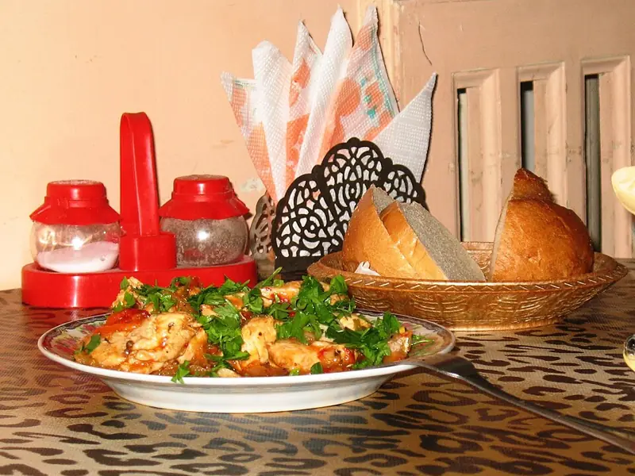

Фото: Victor Vizu, CC BY-SA 3.0

Чахохбили из курицы
Курица, тушённая с большим количеством лука, помидоров, кинзы и хмели-сунели
70 мин4 порц.768 ккал на порциюБ 56 · Ж 52 · У 20Кавказская кухня
Продукты на 4 порц.
- Курица целая1 шт
- Лук репчатый4 шт
- Помидоры7 шт
- Сливочное масло30 г
- Чеснок4 зуб.
- Хмели-сунели1 ч. л.
- Кинза1 пучок
- Базилик по желаниюпо вкусу
- Перец чили по желанию1 шт
- Соль1,5 ч. л.
- Перец чёрный молотый1 щеп.
Как готовить
- Разрежьте курицу на порционные куски, обсушите бумажным полотенцем.
- Выложите куски кожей вниз на сухую разогретую сковороду или в казан и обжаривайте на среднем огне 10-12 минут, переворачивая, до золотистой корочки. Масло не нужно, курица даст свой жир.
- Добавьте сливочное масло и лук полукольцами, жарьте 7 минут, пока лук не станет мягким.
- Помидоры надрежьте крестом, залейте кипятком на 1 минуту, снимите кожицу и мелко порежьте. Выложите к курице.
- Накройте крышкой и тушите на слабом огне 30 минут. Воду не добавляйте, хватит сока помидоров.
- Добавьте хмели-сунели, соль, перец и мелко порезанный чили, если любите острое. Тушите ещё 10 минут.
- Всыпьте рубленые кинзу, базилик и чеснок, перемешайте, выключите огонь и дайте постоять под крышкой 10 минут. Мясо готово, когда легко отходит от кости.
Совет. Лука и помидоров кажется слишком много, но именно они превращаются в густой соус. Если помидоры несочные, возьмите банку томатов в собственном соку.